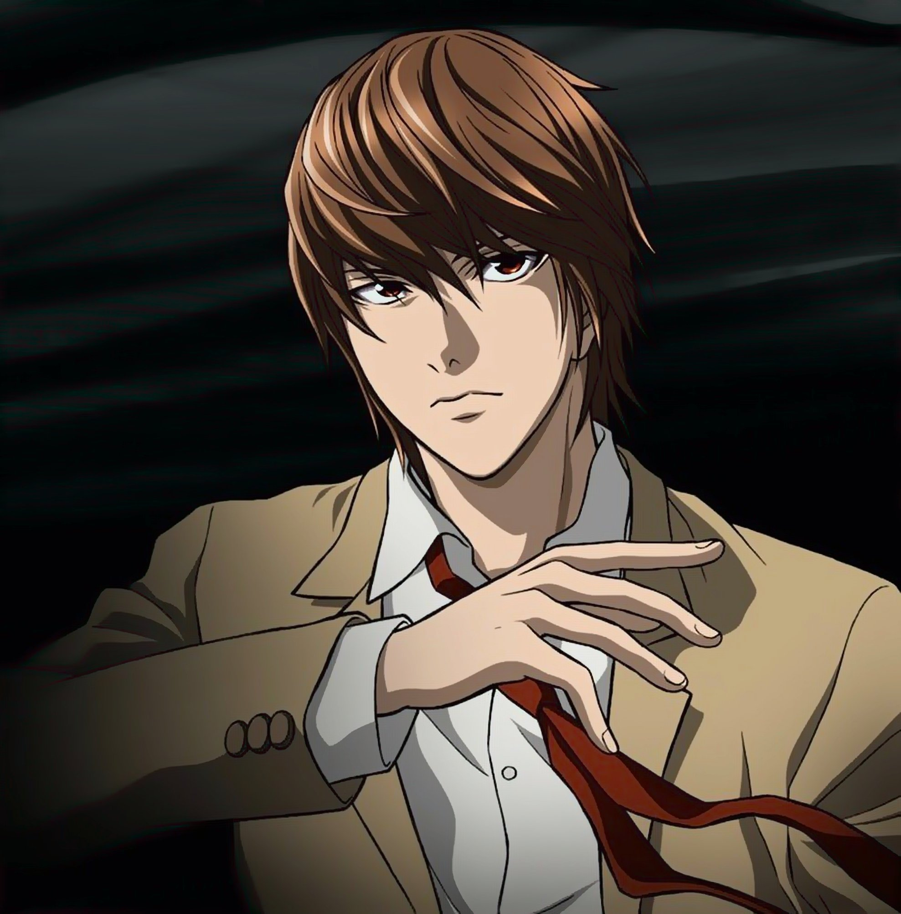

Лайт Ягами
"Я – зло? Я – справедливость! Я тот, кто пришёл в сей мир, чтобы поддерживать справедливость и защищать слабых... я – бог! Но те, кто противятся богу... они – зло!"
Лайт Ягами (夜神月 Ягами Райто) — главный герой серии «Тетрадь Смерти». После обнаружения тетради смерти он решает использовать её, чтобы избавить мир от преступников. Его убийства в конце концов были названы японцами работой «Киры».